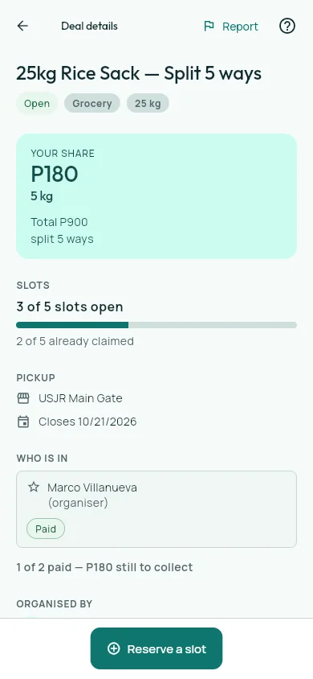
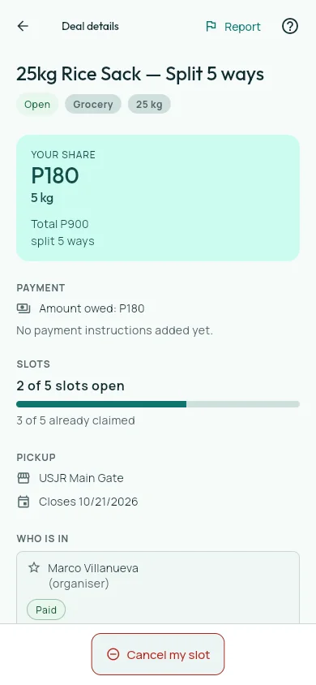

Bulk Buying Companion
A mobile coordination tool for discovering nearby bulk deals, splitting quantities, and managing pickup and payment updates.
- Role
- Team project · Mobile and backend development
- Built with
- Flutter · Supabase · Realtime · Geolocation · On-device ML
Project walkthrough

Problem
Coordinate location-aware group purchases while keeping reservations, payments, notifications, and pickup status current.
A Flutter client uses Supabase for authenticated data and realtime updates, with geolocation and on-device scanning features supporting discovery and fulfillment.
My contribution
Implemented authentication, the geolocation hub, Split Board search, realtime notifications and payment flows, profiles and purchase history, pickup and reporting tools, and the barcode extension. Receipt OCR was team work.
Ownership boundary. Team project; Jayrald delivered defined product slices across authentication, discovery, collaboration, and fulfillment.
Team repository, not currently linked publicly. Jayrald's scope is listed above; receipt OCR belongs to the wider team rather than to him.
How it works
-
Nearby hub
Uses location context to surface relevant group-purchase activity.
-
Split Board
Lets a participant search offers and reserve a share of a bulk quantity.
-
Supabase state
Keeps participant, payment, notification, and pickup records synchronized.
-
Fulfillment tools
Carries the shared purchase through history, reporting, barcode, and pickup views.
Engineering choices
| Decision | Why | Tradeoff |
|---|---|---|
| Use realtime updates for shared purchase state. | Reservations, payment updates, and pickup status are useful only when every participant sees current information. | The client has to reconcile network interruptions and event ordering instead of assuming a static record. |
| Keep barcode recognition on the device. | The extension can identify an item at the point of use without adding a server round trip. | Recognition quality depends on device camera conditions and the supported barcode formats. |
In use
Genuine Flutter interface captured with the repository's locally isolated mock data source. It demonstrates the implemented interaction states, not live participant data.
-
Explore Split Board
Browse the Split Board: searchable deal cards expose share price, quantity, slot availability, and closing date from one mobile surface. -
Reserve a share

Inspect the rice deal: the detail view makes the participant's quantity, cost, capacity, pickup point, and payment state explicit before reservation. -
Track pickup

Reserve a share: locally isolated capture data updates the remaining capacity and exposes the participant's payment and cancellation state.
Outcome
The Split Board flow lets a participant inspect a deal and reserve a share, then shows the updated capacity and cancellation action.
Evidence. The captured rice-deal sequence moves from three open slots to two after reservation and exposes the participant payment state.
Current limits. The walkthrough uses a locally isolated mock data source. It demonstrates interface behavior without verifying live payment processing, multi-user synchronization, or pickup completion.